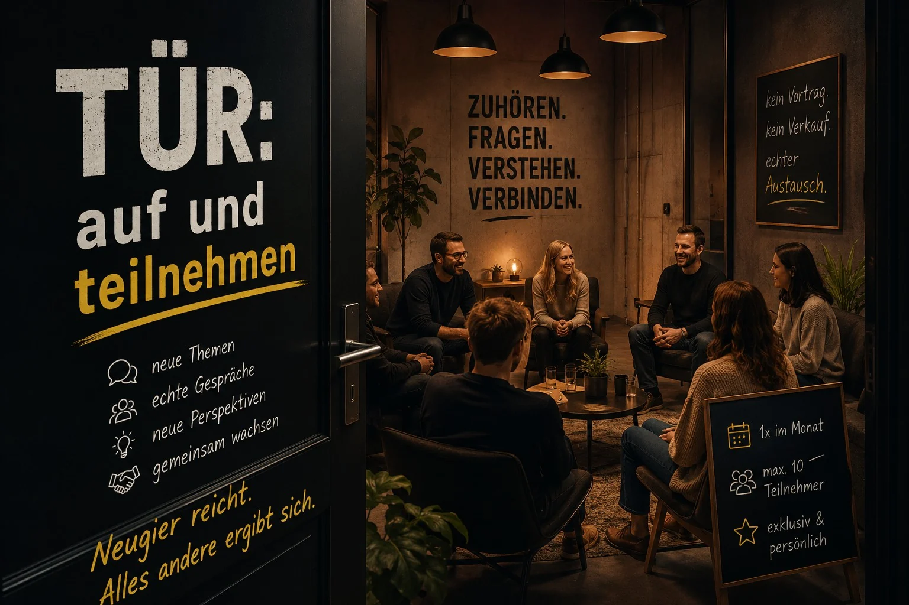

Tür auf.
Teilnehmen.
Ein offener Themenraum für Menschen, die neugierig sind, sich austauschen wollen und Lust auf neue Perspektiven haben. Kein Verkaufsabend. Kein Frontalvortrag. Gute Fragen. Echte Gespräche. Neue Perspektiven, mit denen du etwas anfangen kannst.
Der erste Abend steht.
Am 23. Oktober öffnen wir zum ersten Mal die Tür. Ein Abend für Menschen, die neugierig sind, Fragen mitbringen und Lust auf unterschiedliche Perspektiven haben.
Unterschiedliche Themen. Unterschiedliche Menschen.
Es geht nicht darum, schon alles zu wissen. Wir stellen Fragen, teilen Erfahrungen und finden gemeinsam heraus, was davon für uns wirklich relevant ist.

Was interessiert dich?
Nicht alles verraten wir sofort. Was interessiert dich?
KI
Was davon bringt dir heute wirklich etwas?
Finanzen & Finanzbildung
Geld verstehen, Zusammenhänge erkennen und bessere Entscheidungen treffen.
Schutzengel
Was sollte geregelt sein, bevor es plötzlich wichtig wird?
Selbstständigkeit
Freiheit, Verantwortung und die Dinge dazwischen.
Digitalisierung
Wo kann Technik Arbeit einfacher machen, statt neue Arbeit zu schaffen?
Energie
Was lohnt sich wirklich - und für wen?
Entscheidungen
Was machst du, wenn es keine perfekte Antwort gibt?
Und sonst?
Gute Gespräche müssen nicht in eine Schublade passen.
→ Über Themen abstimmenDie Themen wechseln. Was daraus ein Abend wird, entscheidet sich nicht nur auf dieser Seite, sondern mit den Menschen im Raum.
Der erste Abend steht.
Freitag, 23. Oktober 2026. Wir starten um 18:00 Uhr und planen den offiziellen Teil bis 21:00 Uhr. Danach darf weitergeredet werden.
23.10.
Freitag · 18:00-21:00 Uhr · Dresden
Die genaue Location wird gerade finalisiert. Der Termin steht.
Datum
23.10.2026
Zeit
18:00-21:00 Uhr
Ort
Dresden · genaue Location folgt
Meetup
Aktuell max. 10 Teilnehmer über Meetup.